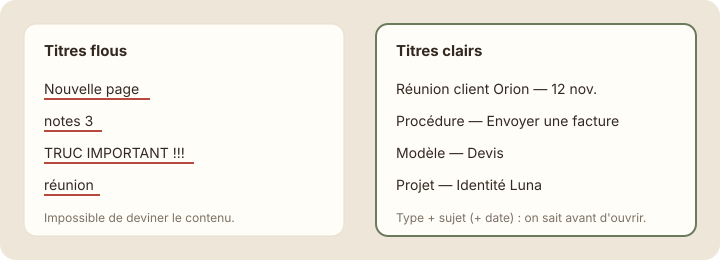

Nommer clairement
À la fin de cette leçon, tu sauras donner à tes pages des titres clairs que toute l'équipe comprend et retrouve.
Étape 1 : comprendre
Un titre de page sert à deux choses : savoir ce qu'elle contient sans l'ouvrir, et la retrouver avec la recherche. « Nouvelle page » ou « notes 3 » ne remplissent aucune de ces deux missions.
Une recette simple fonctionne presque toujours : type + sujet (+ date si utile).
- « Réunion client Orion — 12 nov. »
- « Procédure — Envoyer une facture »
- « Modèle — Devis »
Trois autres bonnes habitudes :
- Une convention commune : si l'équipe écrit toujours les dates de la même façon (« 12 nov. »), les titres se trient et se lisent mieux.
- Pas de « final », « v2 », « copie » dans les titres : Notion garde l'historique des versions (menu ···, « Historique des versions »), et une page n'existe qu'une fois.
- Une icône cohérente par type : la même icône pour toutes les procédures, par exemple. L'œil repère le type avant de lire.

Un bon titre dit ce que contient la page : type + sujet, avec une date si elle aide.
Astuce : pour les comptes rendus, mets la date à la fin et toujours au même format. Dans la recherche, tu tapes « Orion » et tu vois d'un coup toutes les réunions avec ce client, dans l'ordre.
Les titres d'Hugo, avant et après
Voici les pages créées par Hugo, le nouveau stagiaire de Studio Nova, puis les mêmes pages renommées par Emma.
| Avant (Hugo) | Après (Emma) |
|---|---|
| Sans titre | Réunion d'équipe — 10 nov. |
| logo | Ressource — Logos Studio Nova |
| Projets (copie) | (supprimée : doublon de « Projets ») |
| A LIRE | Procédure — Accueil des stagiaires |
| facture vega v2 final | Procédure — Facturer un projet |
Emma n'a rien ajouté : elle a seulement renommé, et supprimé un doublon. L'espace paraît déjà deux fois plus clair.
Renommer tes pages
- Ouvre ta barre latérale et repère les pages au titre flou : « Sans titre », « Nouvelle page », « test »…
- Pour renommer une page, ouvre-la et clique sur son titre, ou fais un clic droit sur elle dans la barre latérale et choisis « Renommer ».
Capture d'écran Notion Renommer depuis la barre latérale · images/captures/m06-renommer.png
- Applique la recette « type + sujet (+ date) ».
- Dans « Notes & réunions », renomme ton compte rendu en « Réunion d'équipe — 3 nov. » si ce n'est pas déjà fait.
- Supprime les doublons et les pages vides qui ne servent à rien.
Attention : avant de supprimer une page qui ressemble à un doublon, ouvre-la et vérifie qu'elle ne contient rien d'unique. En cas d'erreur, elle reste récupérable dans la Corbeille pendant un temps.
Exercice · dans Notion
Renommer pour retrouver
- Renomme au moins trois pages de ton espace avec la recette « type + sujet (+ date) ».
- Supprime une page vide ou en double.
- Teste : avec Ctrl + K, retrouve une page renommée en tapant seulement son sujet.
Résultat attendu : dans ta barre latérale, plus aucune page ne s'appelle « Sans titre » ou « Nouvelle page ». La recherche retrouve tes pages au premier essai.
Étape 4 : vérifier
À retenir
- Un bon titre : type + sujet, avec une date si elle aide.
- Une convention commune à l'équipe rend les titres lisibles et faciles à trier.
- Pas de « final », « v2 » ou « copie » : une page n'existe qu'une fois.
Choisis une réponse avant de valider.
Type, sujet et date : on sait ce que contient la page avant de l'ouvrir, et la recherche la retrouve facilement.
Choisis une réponse avant de valider.
Une seule page à jour. Notion garde de toute façon l'historique des versions.